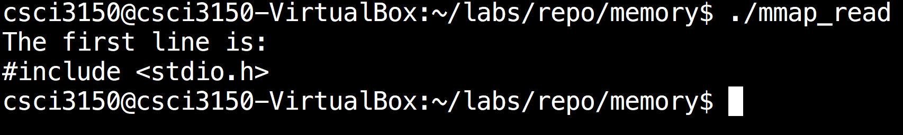

Read file
We use mmap to open the following code whose name is mmap_read.c.
#include <stdio.h>
#include <stdlib.h>
#include <fcntl.h>
#include <unistd.h>
#include <sys/types.h>
#include <sys/mman.h>
#include <sys/stat.h>
#include <errno.h>
int main(int argc, char *argv[]) {
int fd, offset;
char *map;
struct stat fileInfo;
// Usage of running this program
if (argc != 1) {
fprintf(stderr, "usage: ./mmap_read\n");
exit(1);
}
// Before mapping a file to memory, we need to get a file descriptor for it
// by using the open() system call
if ((fd = open("mmap_read.c", O_RDONLY)) == -1) {
perror("open");
exit(1);
}
if (stat("mmap_read.c", &fileInfo) == -1) {
perror("stat");
exit(1);
}
// mmap to read
map = mmap(0, fileInfo.st_size, PROT_READ, MAP_SHARED, fd, 0);
if (map == MAP_FAILED) {
perror("mmap");
exit(1);
}
// Print the first line
printf("The first line is:\n");
offset = 0;
while(1) {
if (map[offset] == '\n') {
printf("\n");
break;
} else {
printf("%c", map[offset]);
}
offset += 1;
}
// Free the mmapped memory
if (munmap(map, fileInfo.st_size) == -1) {
close(fd);
perror("Error un-mmapping the file");
exit(1);
}
// Un-mmaping doesn't close the file, so we still need to do that
close(fd);
return 0;
}

References: